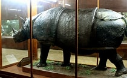

Secara historis, ternyata museum ini pernah berganti nama hingga beberapa kali. Pada tahun 1894 bernama Landbow Zoologisch Laboraturium. Pada tahun 1896 memiliki nama Landbow Zoologisch Museum.
Pada tahun 1909 berganti nama menjadi Zoologisch Museum and Werkplaats. Pada tahun 1910 namanya berganti menjadi Zoologish Museum and Laboraturium sampai tahun 1942 ketika Hindia Belanda telah diakhiri oleh Jepang.
Setelah itu, di masa pendudukan Jepang tahun 1942 yang disebut Dobutsy Hakubutsukan dan dipimpin oleh T. Nakai sampai Jepang kalah oleh Persemakmuran dan Amerika Serikat dalam Front Pasifik. Kemudian namanya kembali lagi disebut sebagai Zoologisch Museum and Laboraturium serta dipimpin M.A. Lieftnick mulai tahun 1946 sampai 1947 silam.
Koleksi Museum Zoologi
Berikut Koleksi Museum Zoologi
Paus Biru
Paus Biru menjadi ikon yang senantiasa dikunjungi oleh banyak wisatawan, Bahkan sampai rela mengantri hanya untuk menyaksikan bentuk dari hewan tersebut. Meskipun hanya dapat melihat tulang belulangnya saja, namun tulang tersebut memerlukan tempat yang luas sekali. Memerlukan hampir 1 ruangan supaya dapat menampung mamalia tersebut.
Perlu Anda ketahui jika paus biru tersebut ditemukan pada tahun 1961 di kawasan Pameungpeuk, Garut. Paus tersebut mati karena terdampar, lalu tubuhnya dibawa ke Bogor dan diawetkan supaya dapat dinikmati oleh banyak orang. Untuk membawa tubuh paus biru yang besar ini ke Bogor, maka memakan waktu sekitar dua bulan. Menurut Nurul, salah satu alasan paus biru menjadi ikonik di museum adalah karena ukurannya yang terbilang "raksasa" dibandingkan hewan-hewan koleksi lainnya. Lebih lanjut, kata dia, kerangka tulang-belulang yang saat ini dipajang di museum bahkan mencapai 64 ton. Sebagai informasi, semua kerangka paus biru adalah asli, kecuali bagian ekornya yang berupa replika.
Badak

Jika mampir ke Museum Zoologi di Kota Bogor, kamu akan menemukan berbagai koleksi satwa yang lengkap dan menarik. Salah satunya yang bisa ditemukan di Ruang Mamalia adalah sebuah hewan berukuran cukup besar yang terancam punah, yaitu Badak Bercula Satu atau Badak Jawa. Anda pasti baru tahu jika di Tasikmalaya terdapat badak yang cukup terkenal dengan berat yang sangat fantastis, yaitu sekitar 2 ton. Sayangnya, badak tersebut merupakan badak terakhir yang pernah hidup di daerah Tasikmalaya. Pada tahun 1914, badak tersebut ditinggal oleh betinanya.
Kematian dari badak tersebut karena dibunuh oleh pemburu nakal dan tidak bertanggung jawab karena hanya mengincar culanya saja. Hewan tersebut menjadi salah satu koleksi di Museum Zoologi mulai tahun 1934 silam. Sebagai informasi, Badak Bercula Satu atau Badak Jawa menjadi fauna berstatus sangat dilindungi. Alasannya, badak bercula satu sangatlah langka dan bahkan terancam punah. Saat ini, spesies badak Jawa yang masih hidup sudah dilindungi di Taman Nasional Ujung Kulon, Banten. Catatan dari Taman Nasional Ujung Kulon menunjukkan bahwa per 2020, hanya ada sekitar 74 ekor badak bercula satu yang masih hidup.Di antaranya, karena perdagangan satwa liar terutama karena mengincar cula, keragaman genetik yang rendah, penyakit dalam, hingga kekurangan habitat. Adapun diketahui bahwa Badak Jawa seringkali mendiami hutan, daerah rawa, dan semak belukar.
Aneka Ragam Ikan
Indonesia merupakan negara kepulauan yang tentu saja menyimpan beragam jenis ikan dengan jumlah yang cukup banyak. Indonesia adalah negara dengan keanekaragaman hayati biota laut terkaya di dunia. Data Kementerian Kelautan dan Perikanan 2020 mencatat, laut Indonesia punya koleksi lebih dari 8.500 spesies ikan, 555 spesies rumput laut, dan 950 spesies terumbu karang. Beberapa spesies ikan, di antaranya, masuk dalam kategori terancam populasinya karena penangkapan besar-besaran, baik untuk dikonsumsi atau dijadikan komoditas ikan hias. Koleksi ikan yang terdapat di Museum Zoologi sendiri berjumlah sekitar 12000 jenis dari total 140 ribu contoh spesimen ikan. Bukan Indonesia namanya jika tidak ada ikan-ikan yang mengisi beberapa diorama di kawasan ini. Ikan-ikan yang dikoleksi museum ini ada banyak dan beragam. Menariknya ikan-ikan ini adalah ikan asli yang diawetkan dan bukan replika. Salah satu ikon yang bisa dilihat di diorama ikan adalah ikan Janglius. Ukuran ikan ini sangat panjang dengan moncong hidungnya yang berbentuk seperti pedang. Hewan ini ditemukan pada tahun 1933 di Teluk Jakarta. Ada pula ikan gergaji yang panjangnya kurang lebih 5 meter. Ikan ini sudah mulai menghiasi museum pada tahun 1924. Jika ingin menemukan spesies ikan ini, sobat native harus masuk ke dalam ruang koleksi binatang air lebih dalam.